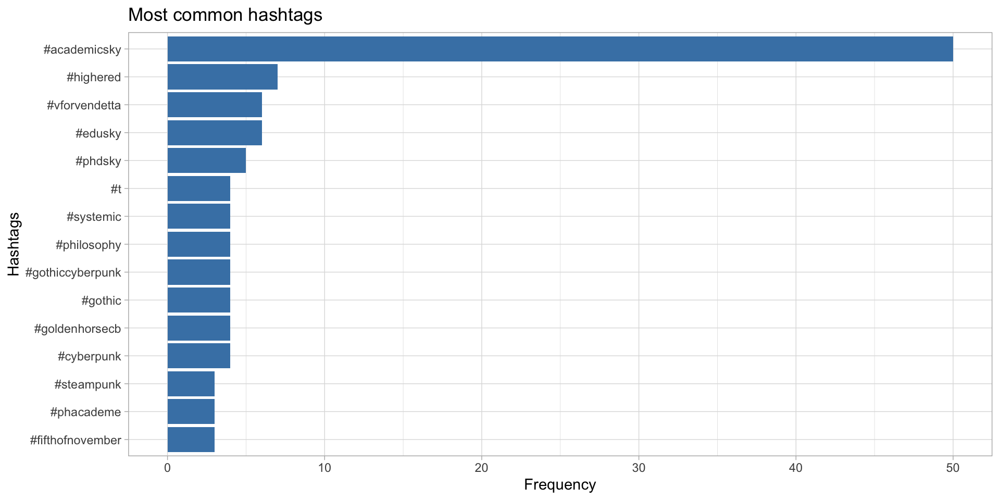
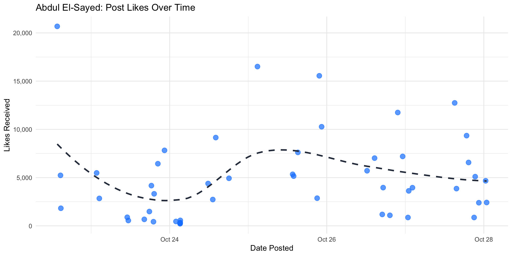

Social media data provide researchers with a real-time view into a wide variety of social and cultural topics. In this workshop, we will use handful of Bluesky endpoints to collect data. We will then explore the resulting dataset using the tidyverse collection of packages in R.
This workshop will address the kinds of information we can glean from social media data as well as several important factors and limitations to consider when doing social media research.
For this workshop, you’ll need a Bluesky account and a Posit Cloud account. Create and/or log into them now. I recommend using Google/Scarletmail credentials to set up the free Posit Cloud account.
It is often held that social media data provide critical and unique insights into human behavior. And social media platforms offer a relatively economical, quick, and targeted way of collecting data, especially as compared to some other sources, e.g. polls, surveys, demographic and economic data. And yet each social media platform presents with structural biases that are important to consider.1
These limitations are important to keep in mind as you frame your research question. For instance, we can’t make generalizations about the population as a whole based on Bluesky data. We can however measure short-term effects, and look for insights relating to the variables we’ve identified as being implicated in our research question. As a purely practical tip, it may make sense to investigate larger topics that generate lots of activity, rather than smaller topics where the resulting dataset may be a less faithful representation of the subject or phenomenon we want to investigate.
Here we initialize an HTTP request object in httr2 targeting Bluesky’s createSession endpoint. We also secure a JSON Web Token (JWT), which acts as our digital key—passing it in subsequent API requests proves to Bluesky that we are authenticated without needing to send our password again.
# create a session
auth_resp <- request("https://bsky.social/xrpc/com.atproto.server.createSession") |>
req_method("POST") %>%
req_body_json(list(
identifier = bsky_identifier, # Your handle
password = bsky_app_password # Generated in Bluesky settings
)) %>%
req_perform() %>%
resp_body_json()
# Get the Access JSON Web Token (JWT)
access_token <- auth_resp$accessJwtHere are a handful of examples of queries you can perform using various API endpoints.
# Search posts by a given author
elsayed_req <- request("https://public.api.bsky.app/xrpc/app.bsky.feed.getAuthorFeed") |>
req_url_query(
actor = "abdulelsayed.bsky.social", # Example handle: Abdul El-Sayed
limit = 10
)
elsayed_resp <- req |> req_perform() |> resp_body_json() # parse JSON response
# Extract post texts
sapply(resp$feed, function(item) item$post$record$text)# Query a custom feed generator URI
# Example feed URI format: at://<CREATOR_DID>/app.bsky.feed.generator/<RECORD_KEY>
# Extract creator handle and record key from the feed's share link
academicsky_req <- request("https://public.api.bsky.app/xrpc/app.bsky.feed.getFeed") |>
req_url_query(
feed = "at://did:plc:4jb3re5tvklsvhuc3lkerj5q/feed/aaak6p5s2f3cu", # Example AcademicSky feed
limit = 20
)
academicsky_resp <- feed_req |> req_perform() |> resp_body_json()
# Extract and view post texts
academicsky_posts <- academicsky_resp$feed
sapply(academicsky_posts, function(item) item$post$record$text)We can get these by using the app.bsky.graph.getList and app.bsky.graph.getStarterPack endpoints.
# Fetch members of a curated list
# For example, the dhmakes list published at https://bsky.app/starter-pack/literaturegeek.bsky.social/3kxucwdkvd222
# First: resolve creator handle DID
resolve_req <- request("https://public.api.bsky.app/xrpc/com.atproto.identity.resolveHandle") |>
req_url_query(handle = "literaturegeek.bsky.social")
creator_did <- (resolve_req |> req_perform() |> resp_body_json())$did
# Second: construct starter pack AT-URI
# Format: at://<DID>/app.bsky.graph.starterpack/<RKEY>
starter_pack_rkey <- "3kxucwdkvd222"
starter_pack_uri <- paste0("at://", creator_did, "/app.bsky.graph.starterpack/", starter_pack_rkey)
# Third: Fetch starter pack metadata
dhmakes_req <- request("https://public.api.bsky.app/xrpc/app.bsky.graph.getStarterPack") |>
req_url_query(
starterPack = starter_pack_uri
)
dhmakes_resp <- dhmakes_req |> req_perform() |> resp_body_json()
# Fourth: Extract the list URI backing the starter pack
list_uri <- dhmakes_resp$starterPack$list$uri
# Fifth: Fetch member profiles from the backing list
list_req <- request("https://public.api.bsky.app/xrpc/app.bsky.graph.getList") |>
req_url_query(
list = list_uri,
limit = 100
)
list_resp <- list_req |> req_perform() |> resp_body_json()
# Sixth: Extract member handles into a vector
dhmakes_handles <- purrr::map_chr(list_resp$items, ~ .x$subject$handle)
# Seventh: View list of handles
head(dhmakes_handles)[1] "ianthis.bsky.social" "sophie-rose-reads.bsky.social"
[3] "conniebdowell.bsky.social" "spottyboypress.bsky.social"
[5] "markalanmattes.bsky.social" "slavagreenberg.bsky.social" letterpress_req <- request("https://bsky.social/xrpc/app.bsky.feed.searchPosts") %>%
req_url_query(q = 'dhmakes letterpress',
limit = 50) %>%
req_auth_bearer_token(access_token) %>% # passes our bearer token
req_perform()
letterpress_resp <- resp_body_json(letterpress_req)
sapply(letterpress_resp$posts, function(p) p$record$text)Reflect on what interests you about social media data. Consider:
Here are a handful of ways that you may wish to analyze the posts or handles you collect.
# install.packages("tidytext")
library(tidytext)
# construct keyword query (AcademicSky again)
academicsky_req <- request("https://bsky.social/xrpc/app.bsky.feed.searchPosts") |>
req_auth_bearer_token(access_token) |> # passes our bearer token
req_url_query(q = 'academicsky',
limit = 50) |>
req_perform()
academicsky_resp <- resp_body_json(academicsky_req)
# reformat our posts as a tidy dataframe
academic_posts_df <- purrr::map_dfr(academicsky_resp$posts, \(post) {
tibble(
uri = post$uri %||% NA_character_,
author = post$author$handle %||% NA_character_,
text = post$record$text %||% NA_character_,
created_at = post$record$createdAt %||% NA_character_,
replies = post$replyCount %||% 0,
likes = post$likeCount %||% 0,
reposts = post$repostCount %||% 0
)
})
reg_words <- "([^A-Za-z_\\d#@']|'(?![A-Za-z_\\d#@]))" # to tokenize text of posts
url_pattern <- "https?://\\S+|www\\.\\S+|&[a-z]+;|\\b(RT|MT)\\b|https?$"
tidy_academic_posts <- academic_posts_df |>
mutate(text = str_replace_all(text, url_pattern, "")) |>
# Extra step: Clean up extra white space left behind after removals
mutate(text = str_squish(text)) |>
unnest_tokens(word, text, token = "regex", pattern = reg_words) |>
filter(!word %in% stop_words$word,
str_detect(word, "[a-z]"))
tidy_academic_posts |>
filter(str_detect(word, "^#")) |> #just capture hashtags, comment out if unwanted
count(word, sort=TRUE) |>
filter(n > 2) |>
mutate(word = reorder(word, n)) |>
ggplot(aes(x=word, y=n)) +
geom_col(fill = "steelblue") +
labs(x = 'Hashtags', y = "Frequency", sep = "", title="Most common hashtags") +
theme_light() +
coord_flip()
letterpress_req <- request("https://bsky.social/xrpc/app.bsky.feed.searchPosts") |>
req_auth_bearer_token(access_token) |>
req_url_query(
q = "dhmakes letterpress",
limit = 50
) |>
req_perform()
letterpress_resp <- letterpress_req |> resp_body_json()
# helper function to extract image URLs
get_image_urls <- function(post) {
embed <- post$embed
if (is.null(embed)) return(NA_character_)
# Case 1: Standard Image Post
if (embed$`$type` == "app.bsky.embed.images#view") {
return(map_chr(embed$images, ~ .x$fullsize) %>% paste(collapse = "; "))
}
# Case 2: Image Post with a Quote (Record with Media)
if (embed$`$type` == "app.bsky.embed.recordWithMedia#view") {
return(map_chr(embed$media$images, ~ .x$fullsize) %>% paste(collapse = "; "))
}
return(NA_character_)
}
# Apply this in your dataframe
clean_posts_with_media <- map(letterpress_resp$posts, \(post) {
tibble(
author = post$author$handle,
text = post$record$text,
image_urls = get_image_urls(post), # Custom extraction
has_image = !is.na(image_urls)
)
}) %>% list_rbind()
# Filter to only show posts that actually have images
posts_with_images <- filter(clean_posts_with_media, has_image == TRUE)
# Inspect first image url
posts_with_images$image_urls[1][1] "https://cdn.bsky.app/img/feed_fullsize/plain/did:plc:quschouau47zm4f3ntsw7j5y/bafkreig5pd42vrbufgnlz2x46a3o4lemrrrbblg3xbnyex5fu2av2gx4oq; https://cdn.bsky.app/img/feed_fullsize/plain/did:plc:quschouau47zm4f3ntsw7j5y/bafkreiaqbuywri2qguwowklkzczey3ti6deg74a65lovgpfoe4tft3guqe; https://cdn.bsky.app/img/feed_fullsize/plain/did:plc:quschouau47zm4f3ntsw7j5y/bafkreie5nl37irjjebte36wdcxwgk54rcpr72lofkwk3iey7uerw5fhepu"#install.packages("scales")
library(scales)
# 1. Fetch recent posts from Abdul El-Sayed's author feed
# (app.bsky.feed.getAuthorFeed accepts unauthenticated requests via public.api)
feed_req <- request("https://public.api.bsky.app/xrpc/app.bsky.feed.getAuthorFeed") |>
req_url_query(
actor = "abdulelsayed.bsky.social",
filter = "posts_no_replies", # Focus on primary posts
limit = 50
)
feed_resp <- feed_req |> req_perform() |> resp_body_json()
# 2. Extract post metrics into a clean dataframe
posts_df <- map_dfr(feed_resp$feed, function(item) {
post <- item$post
rec <- post$record
tibble(
created_at = ymd_hms(rec$createdAt),
likes = post$likeCount %||% 0L,
text = rec$text %||% ""
)
})
ggplot(posts_df, aes(x = created_at, y = likes)) +
geom_point(aes(size = reposts), color = "#1185FE", alpha = 0.7, size = 3) +
geom_smooth(method = "loess", se = FALSE, color = "#2D3748", linetype = "dashed") +
scale_y_continuous(labels = comma) +
labs(
title = "Abdul El-Sayed: Post Likes Over Time",
x = "Date Posted",
y = "Likes Received",
size = "Reposts"
) +
theme_minimal()
Let’s reflect on the type(s) of analysis needed for your social media data.
You may (and should) write any new and derived data you want to keep to file. It’s very easy to read it back into R to continue your work later.
I’m happy to hear from users about how they end up applying what they see in workshops to questions of their own. To that end, feel free to be in touch with questions or feedback. A survey about this workshop will reach your inbox in an hour.